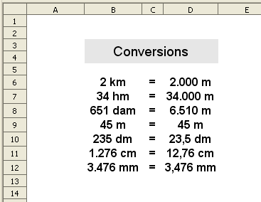

Conversions amb el sistema mètric decimal (unitats de longitud).
Presentació gràfica de l'activitat

Funcions que es fan servir en aquesta activitat
Operadors de multiplicar (*) i dividir (/)
Objectiu de l'activitat
Convertir valors expressats en diferents unitats de longitud (km, hm …) a una sola unitat de mesura (metre).
Desenvolupament de l'activitat:
1. Obrir el fixer M1 i afegir un nou full amb el nom de M1P5 conversions
2. Fer un alineament de text centrat horitzontal i vertical de les cel·les del rang B6:D12
3. Formatar les cel·les del rang B6:B12 per expressar els valors de la següent manera:
- La cel·la B6 expressa els valors amb km
- La cel·la B7 expressa els valors amb hm
- Laa cel·la B8 expressa els valor amb dam
- La cel·la B9 expressa els valors amb m
- La cel·la B10 expressa els valor amb dm
- La cel·la B11 expressa els valor amb cm
- La cel·la B12 expressa els valor amb mm
- Anar a Format|Cel·les|Marcar en separadors de milers. Havent fet això, es podrà veure que per defecte apareix l'expressió de #.##0 dintre de la casella de Codi de fomat. Escriure “km” a continuació de #.##0. Finalment quedaria així: #.##0 “km”
Per escriure altres expressions, només cal fer el mateix procés i escriure el que convingui dintre de les cometes.
4. Escriure a les cel·les del rang C6:C12 el signe de igual (=)
5. Formatar les ce·les del rang D6:D12 amb separadors de milers.
Accedir a Format | Cel·les | Nombres (categoria: números) i en Opcions marcar la casella de separadors de milers.
7. Escriure a la cel·la D7: =B7*100
8. Escriure a la cel·la D8: =B8*10
9. Escriure a la cel·la D9: =B9
10. Escriure a la cel·la D10: =B10/10
11. Escriure a la cel·la D11: =B11/100
12. Escriure a la cel·la D12: =B12/1000
13. Formatar la cel·la D10 amb un decimal.
14. Formatar la cel·la D11 amb dos decimals.
15. Formatar la cel·la D12 amb tres decimals.
Anar a Format|Cel·les|Nombres|Número|Opcions|Nombre de decimals (indicar el número de decimals)
16. Fer l'amplada que convingui de les columnes.
17. Protegir les cel·les que convingui.
19. Desar el fitxer M1.
L'activitat podria quedar així:

Una possible activitat de conversió de temàtica diversa.
En aquesta activitat així com es van canviant les dades de les ce·les dels rangs (B3:B14) i (F3:F14), es van actualitzant els valors de les cel·les dels rangs (D3:D14) i (H3:H14) respectivament.

Al gràfic de sota es poden veure les fórmules que hi ha a les cel·les dels rangs (D3:D14) i (H3:H14)les quals fan els càlculs de conversió. En aquestes fórmules s'han fet servir els següents operadors:
* multiplicació
+ suma
/ dividir
^ exponent

Una altra possible activitat de tipus taula o graella on es presenten totes les unitats de longitud.

Al gràfic de sota es poden veure les fórmules que hi ha a les cel·les del rang (D5:J11) les quals fan els càlculs de conversió. Els valors que hi ha a les cel·les del rang D3:J3 representen el segon factor de la multiplicació en les fórmules. També seria possible esborra els valors d'aquest rang, però llavors caldria escriure el valor del segon factor de la fórmula en cada cel·la de color verd. Aquest fet va en funció si cal escriure una semblant fórmula en moltes cel·les o no.

El mateix es podria fer amb les mesures de pes i de capacitat.
En mòduls més avançats es podran dissenyar activitats de conversió més completes i que podrien ser del següent tipus:
X u = X u
La X representa un número qualsevol i la u representa la unitat de longitud en que s'expressa.
Exemple:
22 km = 22.000 m
En aquest exemple tenim quatre variables(dues x i dues u) i així com es canvien els números (X) o les unitats (u), es van actualitzen de manera automàtica les dades.
En aquest exemple si canviem km per hm, de manera automàtica s'actualitza el 22.000 per 2.000. El mateix passa si es canvia la m per qualsevol altra unitat.
A més, les cel·les de les unitats d'expressió (lletres) tenen un format condicional amb la qual cosa només s'admet escriure un dels següents valors: km, hm, dam, m, dm, cm, mm.